Project Details
My Great AI Novel
An 18-chapter science fiction novel concept written through human-AI collaboration, professionally designed by me in Adobe InDesign. Includes book layout, typography, cover design, AI-generated illustrations, and publication-ready formatting.
Word Software Manual Project
Modular software documentation manual based on the functions of Microsoft Word, made completely in Microsoft Word for an intended audience of college freshmen. Preliminary documentation plan and usability test with real freshmen victims included.
-
Final Manual
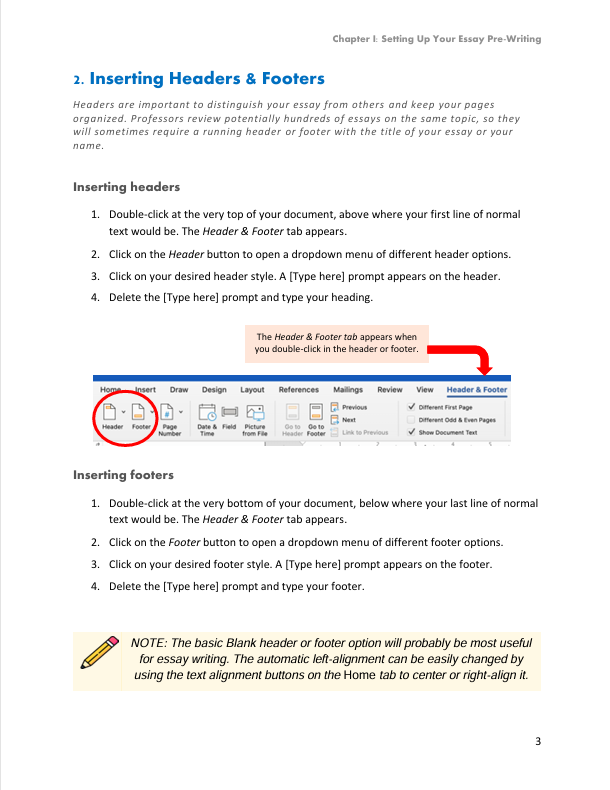
My final project ended up being a thirty-three-page manual with five chapters and fifteen different modules. I learned and implemented all of the best practices for technical writing, particularly in a modular two-page spread format. After the content, I focused a lot on details like my chapter page designs, call-outs, color scheme, and notes, so I am especially proud of the overall design of this project.
-
Usability Testing Documentation
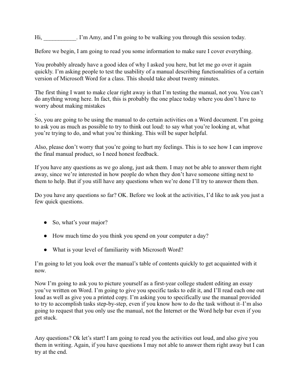
One of the most important parts of technical writing is a focus on usability, and I believe these documents show my attention to user-centric communication. Per my intended audience, I had freshman volunteers use my manual to make edits to an essay I had created so that I could see how a user would interact with my manual to troubleshoot my content and structure. The script I created to perform the usability testing and my memo reflection from afterward are above!
-
Preliminary Documentation Plan
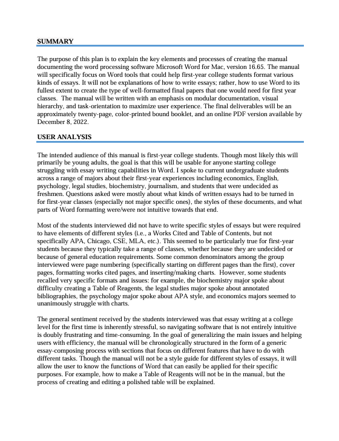
Preliminary doc plans are essential for big projects, and I think this plan speaks to my attention to detail and big-picture thinking. Before creating the Word manual, I submitted this documentation plan outlining my user analysis, and project schedule, as well as the tools, resources, and receivables.
Mock Grant Proposal
Hypothetical request for funding and feasibility study on behalf of a real non-profit.
-
Final Proposal
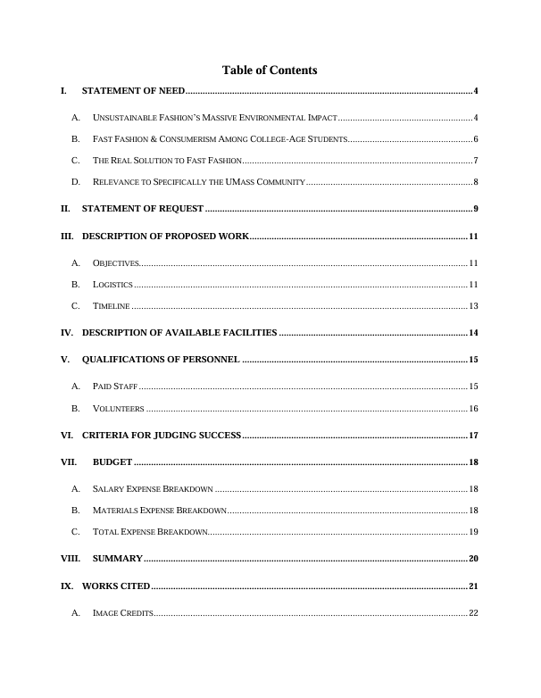
My final 22-page report entails a request for funding for a hypothetical event series aimed at promoting and providing sustainable fashion practices in the Amherst community on behalf of non-profit Fashion Revolution USA. It entails all of the conventions of a legitimate grant proposal including a statement of need and associated research, a description of proposed work, a criteria for judging success, a schedule overview, an expense breakdown, and more.
-
Feasibility Study
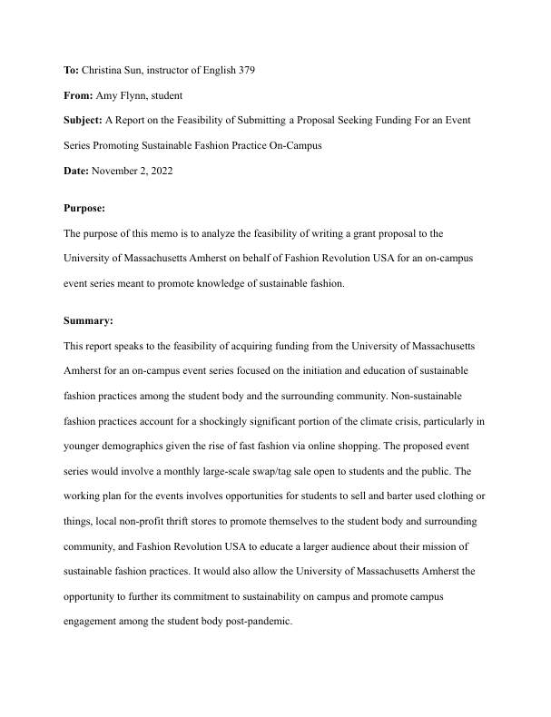
Per the usual grant-writing process, I wrote a feasibility study on the topic before I actually started the grant writing. I think this study is indicative of the time I put into every piece of a project and shows my professional writing skills.
MadCap Flare Accessibility Website/PDF
Originally published as a live MadCap Flare website on the University of Massachusetts server. While the original site is no longer hosted, the project is preserved through the companian PDF generated via MadCap Flare.
-
Final Website
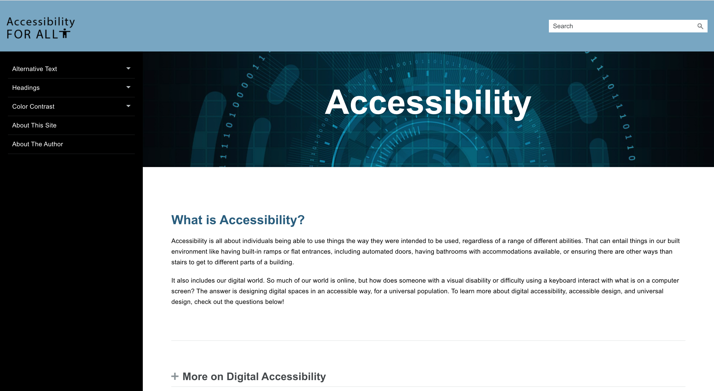
This is the a screenshot of the final website's homepage, created with Madcap Flare. The site is no longer live, but you can see the clear hierarchy and different customizations including the logo I created and the home page design. -
Final PDF
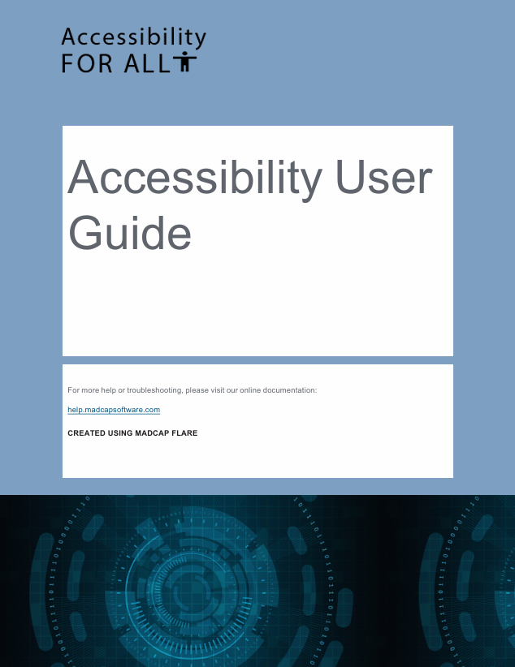
Madcap Flare also outputs as a PDF, which I also customized for readability. This was a great opportunity to learn more of the ins and outs of Flare, especially in different formats.
Python Data Science Project
Kaggle dataset exploration with Python.
-
Python Data Science Project
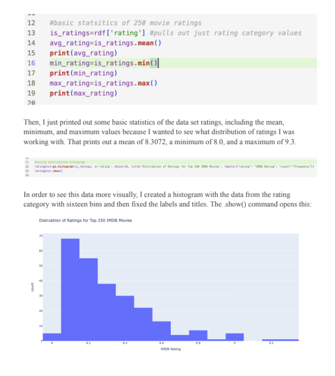
This project displays my introduction to data science using Python. We were given different datasets from Kaggle to choose from, and then wrote functions to display different stats of the study and create visual displays.
Click the image above to see a PDF of the code explanation and final results.
Graphic Design Samples
PWTC Design Projects
A handful of my favorite design products from my techncial writing courses.
-
Two-Page Spread Magazine
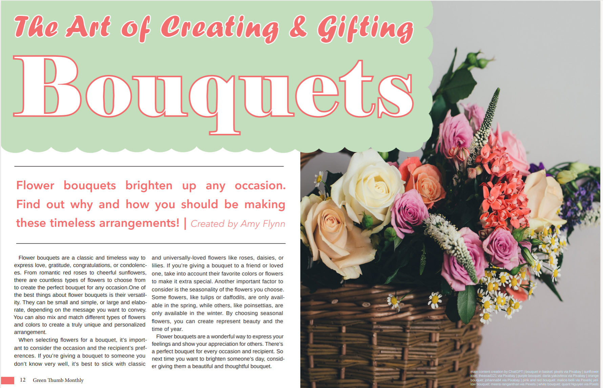
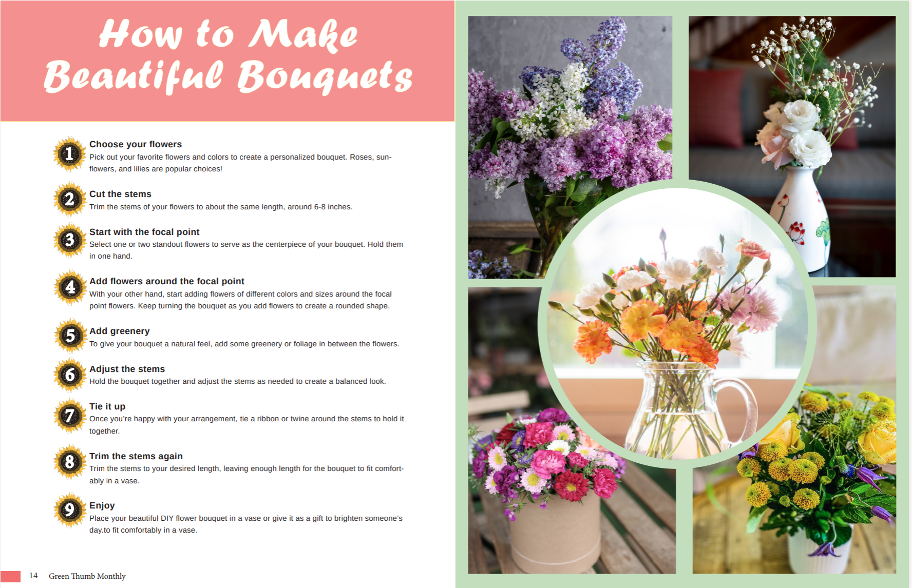
This is a two-page magazine spread created with Adobe InDesign. What I like most about this project is my attention to visual interest; the sunflower step numbers, the "stained glass" arrangement of images on the fourth page, the colors pulled from the first image, and the scalloped petal border of the title.
Click the images to see the larger pdf versions!
-
InDesign Flyer
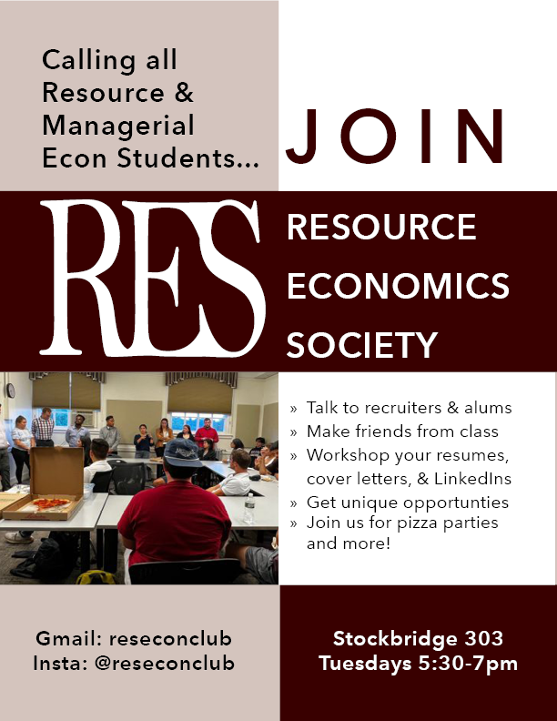
I created this flyer to fulfill an assignment and make more marketing material for RES. I was especially pleased with the final version's colorblocked design, and how I was able to organzie a large, relatively specifc amount of information into a visually interesting final product.
Click the image to see a larger pdf version!
-
Personal Logo
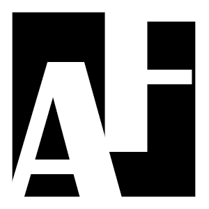
I made this logo in Adobe InDesign. This was certainly not my most involved project, but I liked how playing with the negative space came out.
Political Campaign Materials
A set of double-sided campaign palm cards designed to communicate candidate information and key messaging in a compact print format.
-
Palm Cards
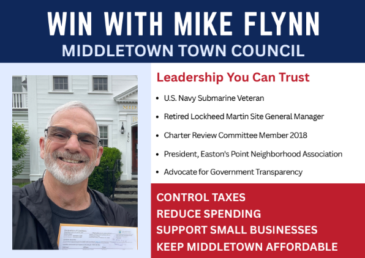
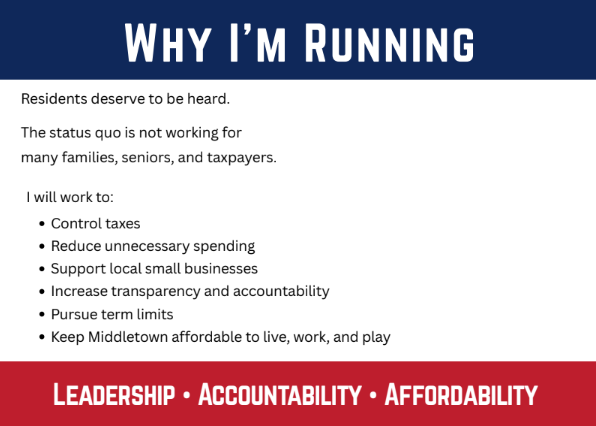
Resource Economics Society Marketing
A collection of promotional flyers I developed for campus events, adapting layouts and branding for different audiences and purposes.
-
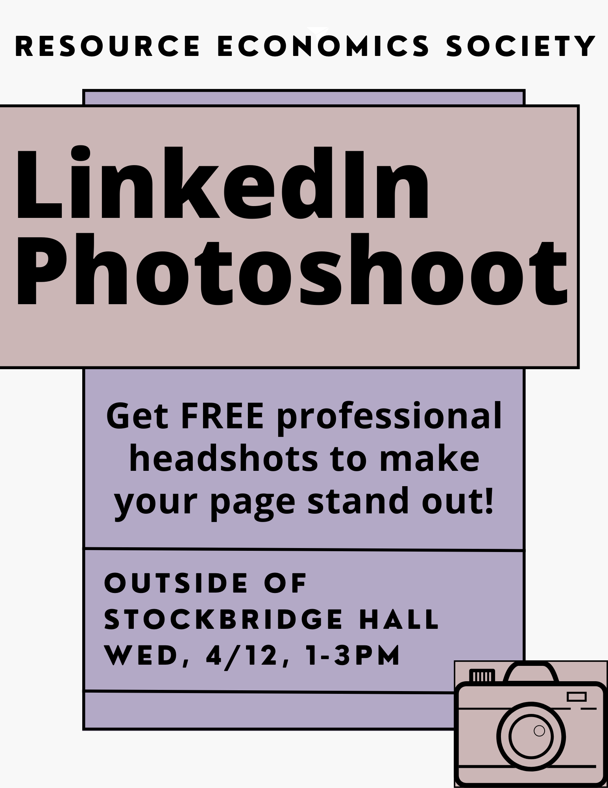
-
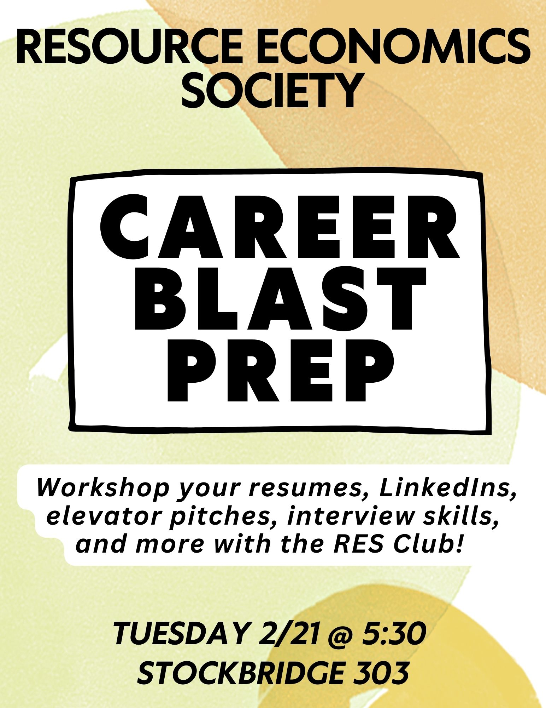
Academic Writing Samples
-
Capitalism in the Age of the Internet
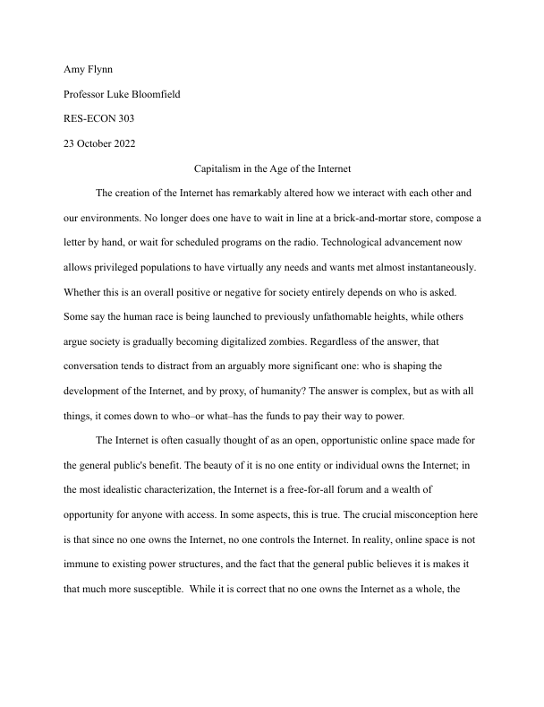
The assignment for this project was to write two-thousand words on just about anything, and this ended up being one of my favorite pieces of mine. I chose to talk about modern economics, or more specifically, the intersection of digitalism with capitalism and all the things that go with that: surveillance capitalism, monopolies in tech, the social power of data extraction, the redefinition of industry, the gig economy and how all those things tie together.
-
The Most Influential Megatrends of the Future
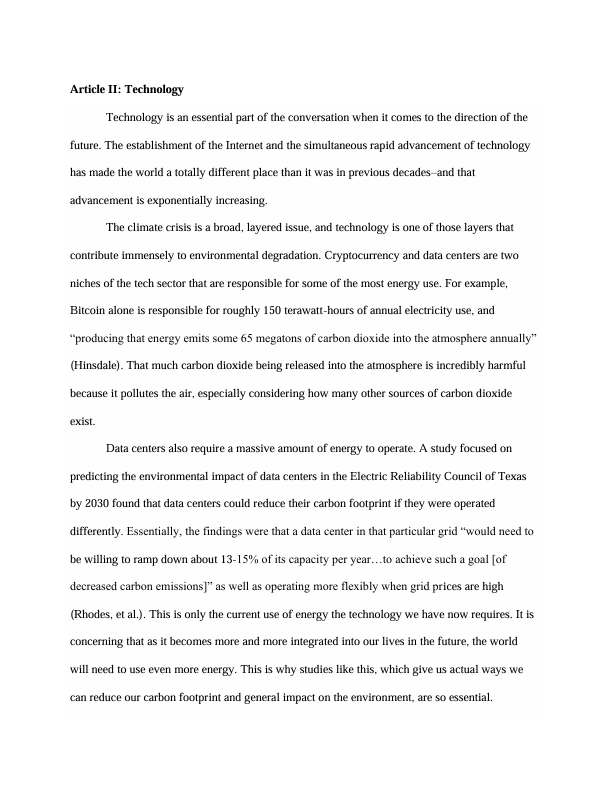
This was a partnered paper assignment in which two people wrote about what life could be like in twenty years or beyond. The first article was written by my partner about sustainability, and I wrote the entirety of the article above about the effects of technology on the (nearer) future. In this paper, I talk about how technology will impact the climate crisis, corporate responsibility, automation, and more.
-
Data and Surveillance | Policy Trends
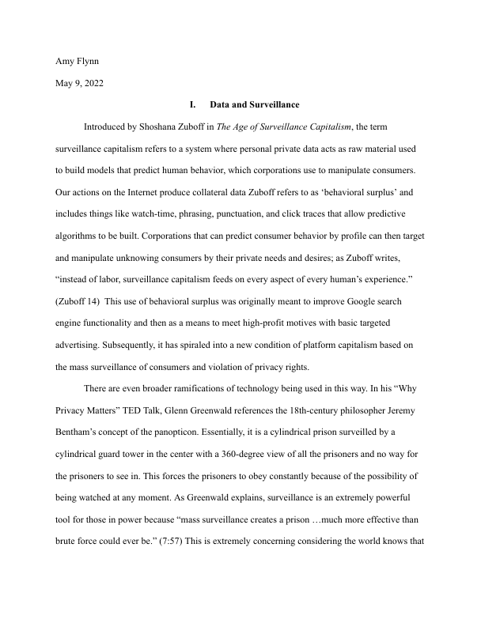
This was a final reflection assignment where we were supposed to talk about our opinion of the works we’d looked at in class in regards to data, surveillance, and policy trends in the future. In this, I unpack the main pieces of writing we talked about in class and give my take on them. Mainly, I talk about why data extraction is not inherently “bad” technology, but rather the lack of transparency and the motivation behind data extraction has landed us dangerously close to an era of surveillance capitalism.